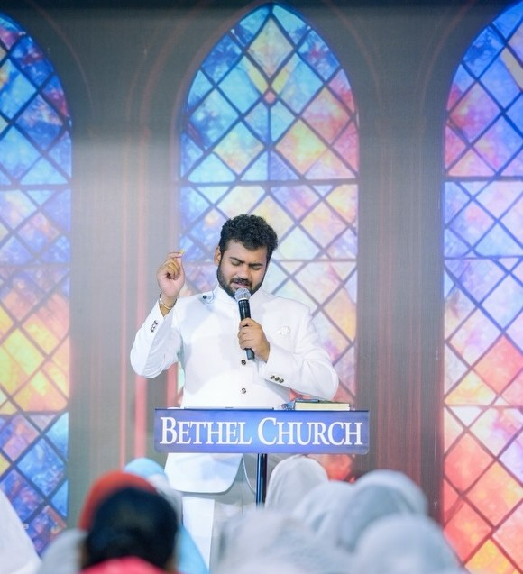

📍 IV palace, near Andra hospitals road, Vijayawada, AP
|
📞 Call or WhatsApp to Plan Your Visit

Pastor Enosh Kumar Vasamsetti
Lead Pastor · The Bethel Church, Vijayawada
Pastoral Leadership
A Legacy of Faithful Ministry
"Every family that walks through our doors carries a story God is still writing."
Pastor Enosh Kumar Vasamsetti leads The Bethel Church as a next-generation shepherd — combining deep biblical grounding with a pastoral heart shaped by decades of ministry heritage. Rooted in the very soil of Vijayawada, he brings clarity to the Word, authenticity to worship, and genuine care to every soul in the congregation.
With a background in professional audio engineering, Pastor Enosh's commitment to excellence extends from the pulpit to the media platform — believing that truth deserves to be communicated with both power and precision.
"He heals the brokenhearted and binds up their wounds."
— Psalm 147:3
Church Life
A Place to Belong & Grow
From Sunday worship to pastoral counseling, every ministry at The Bethel Church is designed to walk alongside you — in every season of life.
Sunday Worship Service
Every Sunday at 10:00 AM. Come encounter the presence of God through Spirit-led worship, Scripture-centered preaching, and a warm community of believers.
Access a growing library of Bible-centered messages by Pastor Enosh. Thematic series, verse-by-verse exposition, and weekly devotionals — online and on-demand.
Spirit-filled worship is central to our culture. Engage with original songs, music videos, and a creative team dedicated to excellence in God's presence.
Our marriage was on the verge of collapse. Through the counseling and prayer of this church, God restored what we thought was beyond repair. The Bethel Church gave us back our home.
SR
Srinivas & Radha
Congregation, since 2018
I found this church during one of the darkest seasons of my life. The Word preached here brought clarity, peace, and a direction I had been seeking for years. I am not the same person.
PK
Prasanna Kumar
Online follower, Hyderabad
Pastor Enosh's sermons are different — biblically deep, personally honest, and practically grounding. My faith has grown more in two years here than in the ten before it.
AJ
Anuradha Joseph
Member since 2021
Digital Ministry
Reaching Thousands Beyond Vijayawada
The ministry extends far beyond our walls. Through high-quality sermon production, worship recordings, and consistent digital content — thousands across Andhra Pradesh and beyond are being reached every week.
You don't need to have it all together to walk through our doors. Come as you are — and experience a community that believes the best is still ahead for your family.